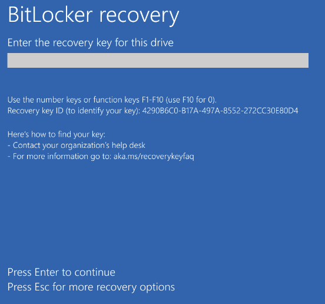
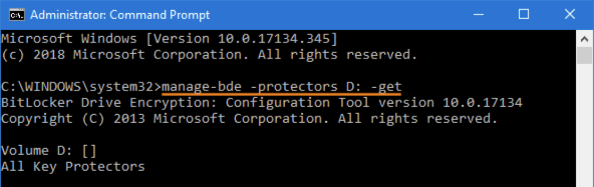

A while ago at work I ran into a situation with a locked Razer laptop that was secured with BitLocker. Put more plainly, I locked myself out of my own work laptop by entering the wrong password too many times. HR sent me a 48-digit recovery key. When I went to enter the recovery key, I discovered that the keyboard was totally frozen. After a little bit of wrestling with this issue, I had compiled a list of things that didn’t work: fiddling with keyboard settings in BIOS, recovery mode, a USB wired keyboard -- there was no state in which I could have access to the keyboard, and also get a chance to enter the BitLocker recovery key.
This went on for some time but it wasn’t too pressing as I had another machine for development work. This locked laptop was basically only useful for note-taking in meetings. It was mostly just embarrassing that I had a locked laptop.
Online information was actually plentiful, but not helpful. Forum posts indicated that this was a pervasive issue with this brand of laptops. When I asked LLMs, they just found the same forum and customer support posts I had already read, and would suggest the same things repeatedly. I unsuccessfully tried to prompt the LLMs to think more from first principles, because clearly the available discussion material did not contain a solution as both of us had combed all of them with no solution in sight.
At some point I realized that I could access a terminal within the Windows recovery flow, but of course I still didn’t have access to my keyboard, so this had long been considered a dead-end.

I sat looking at the blinking text cursor and suddenly an idea hit me: Let’s see if I get a clipboard here... probably, right? Highlight ‘Windows’ with my mouse, right click to copy, right click again and there it is: ‘Windows’ pasted there on the command line. This could be it! One more thing I need, how do I get an enter press? I tested with a new line above and…
'Windows' is not recognized as an internal or external command, operable program or batch file.
And that’s it! With just this information I knew that I could get this recovery key entered. It would be a little arduous, but I was pretty excited by this. What was striking was that this silly trick was more exciting for me than a lot of problem-solving I had encountered in day to day development work in a long time.
The BitLocker recovery command looks something like:
manage-bde -unlock D: -RecoveryPassword 123456-123456-123456-123456-123456-123456-123456-123456
I have a lot of what I need already! I can get ‘manage__de’ from just the initial prompt:
Microsoft Windows [Version 10.0.xxxxx.xxxx] (c) Microsoft Corporation. All rights reserved. C:\Windows\System32>
How do I get a lowercase ‘b’ and a hyphen? I can get hyphen from date:
C:\Windows\System32> date The current date is: Sun 06/07/2026 Enter the new date: (mm-dd-yy)
That was the process I followed: taking the set of characters I did have, to construct commands that could give me what I needed. If I recall correctly, the last big hurdle was making sure I had all of the right numbers and potentially uppercase letters for the recovery key.
When I finally had the entire command entered, and pasted the newline and saw my laptop freed up again, it was genuinely a rush that I used to feel frequently when building software.
The whole reason I’m writing about this is because it felt like a problem solving journey with a satisfying solution that I just haven’t felt since LLM based workflows became commonly used tools for me.
When I started writing code around 2008, I had many thousands of those moments ahead of me where something actually starts working. The feeling of being at the edge of a problem you need to solve, and trying different things to understand the nature of the problem, the scope of the disconnect between the behavior you are looking for and what is currently happening, and finally matching that gap with a solution is what this career has always been about to me.
I can vividly remember overhearing a conversation with the CEO of a startup I interned with in high school about how LinkedIn data was necessary for a customer demo the following week, and hearing the CTO tell him that it was impossible without paying their exorbitant API fees. Regardless of whether or not that was altogether the truth, I spent the weekend at home writing a web scraper that needed Selenium support to get around LinkedIn’s very creative anti-web scraping safeguards. There was a collapsed panel that contained data that was essential to what the company needed for this demo. I assumed it must live in the HTML somewhere, right? Wrong. It did not make the server request for that data until you actually collapsed the panel. I don’t remember why the endpoint was so inaccessible that I tried a different approach, but I will always remember coding Selenium to click that panel and get the data and watching it drop it into the CSV for the first time.
There were simpler versions, like actually getting the QR code scanner to connect to the Electron app I built for a project I once hoped would become a company.
There are more serious versions, like discovering that my solution to a data passback optimization finally worked, while working at a big tech company and later seeing the very serious money it led to for the company. Scale made these problems more fun for sure but it really didn’t matter. Those moments of satisfaction with your solution were special, regardless of the circumstances. They were the reward for the patience you spent in logs, the thought put into debugging, and the flashes of “what if I just tried…” that you later learned to never ignore.
Since the rise of intensive LLM usage in engineering workflows, I have done what software engineers have been trained to do for a long time, I adapted to the latest set of tools. Everyone knows that these tools felt invigorating initially, in a manner that is very similar to what I have been describing. One of the beautiful things about this method of building is that more people can know this feeling that I’m talking about.
I don’t think the story is that simple though. We all know that the initial invigoration of AI-assisted building tends to taper off as the product gets more complex and many smart people are working on the problems inside that problem, including the big labs themselves. What’s more compelling to me is the worry that if you aren’t present for the thinking involved in getting to the edge, that you can never produce those insights that lead to novel solutions that frequently occur at the edge.
I keep thinking of how the LLMs were incapable of thinking from first principles and outside of the forum posts I had already read during my Bitlocker issue. It reminds me of all of the times I simply ran out of StackOverflow questions, blog posts. I would Google again and be met with a sea of purple links and look again at one of them to see if there was something I missed. The solution could come to me in the morning almost immediately after waking, or while taking a walk thinking about something else entirely.
I personally think that these “Aha!” moments have led to some of the best inventions, solutions, optimizations, etc. in engineering broadly. They have given me the most satisfaction in my career and helped me build and fix a lot in my life.
Psychologists call this incubation. Whatever the mechanism, those moments seem to require spending enough time with a problem that it becomes part of your internal landscape. I think this would be a fascinating focus for mechanistic interpretability researchers.
To close, if engineering becomes increasingly about selecting, editing, and validating generated solutions, what happens to the conditions that historically produced deep understanding and insight? I personally am working on refining my approach to writing code with modern workflows so that I do not stop thinking at the edge.